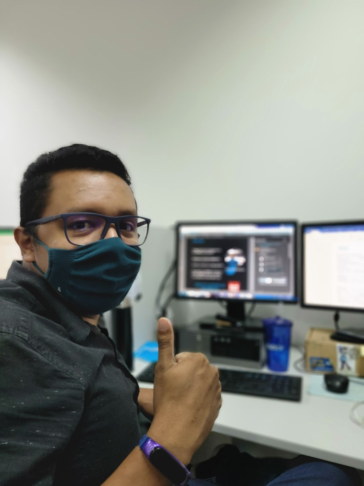

Estágio de TI
2020 - 2022

Sobre:
Minha Trajetória no Estágio de TI
Comecei minha jornada no setor de Tecnologia da Informação no Centro de Educação Tecnológica do Amazonas
(CETAM). Essa experiência foi, sem dúvida, uma das melhores coisas que aconteceram na minha vida. No
CETAM, tive a oportunidade de aprender de tudo um pouco, desde suporte e atendimento ao usuário até
infraestrutura e montagem de servidores.
Logo no início, percebi que tinha muita sorte em estar cercado por grandes profissionais. Eles não
apenas compartilhavam seus conhecimentos, mas também faziam isso de uma maneira acessível e sem
exasperação, o que tornou o ambiente de aprendizado extremamente agradável e produtivo. Aprendi a
resolver problemas técnicos, a prestar um atendimento de qualidade aos usuários e a compreender os
detalhes da infraestrutura de TI, incluindo a montagem e manutenção de servidores.
O mais valioso dessa experiência foi o apoio contínuo que recebi. Mesmo após o término do estágio,
mantenho contato com esses profissionais que me mentoraram. Eles continuam sendo uma fonte de inspiração
e orientação na minha carreira.
Este estágio não apenas me forneceu habilidades técnicas essenciais, mas também me ensinou a importância
do trabalho em equipe e da comunicação eficaz. Sou muito grato por essa oportunidade e pelas conexões
duradouras que fiz ao longo do caminho.